Topic¶
Introduction¶
Topics are the menu options that are visible on the website Homepage.
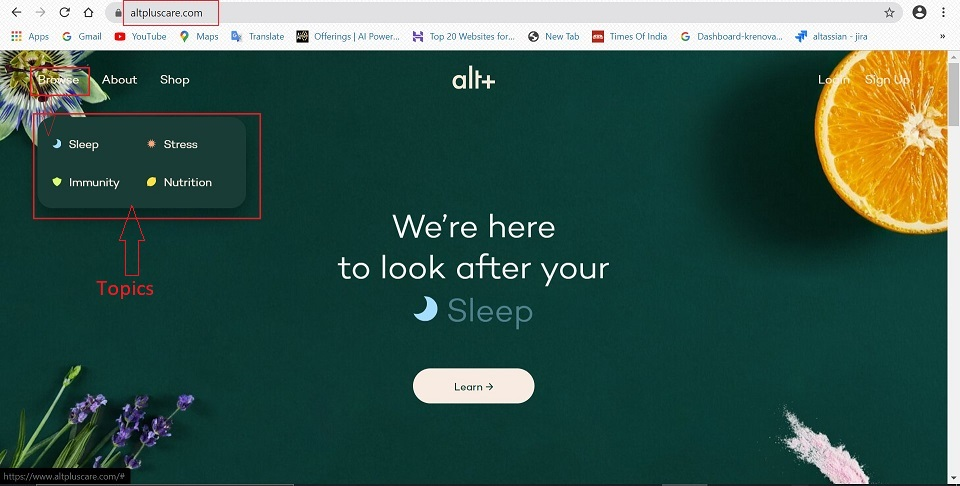
Create Topic¶
Below is the step-by-step guide to create Topics:
- Go to -> altpluscare.com/wp-admin
- Login with the credentials
-
Click on Pages on the left side panel.
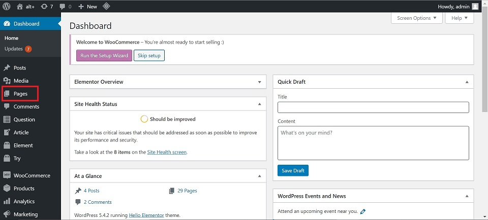
-
Select -> Topic -> this will open the Add New Topic page.
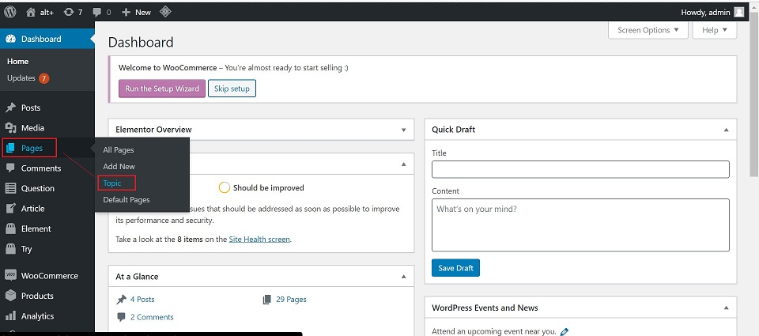
-
Add New Topics:
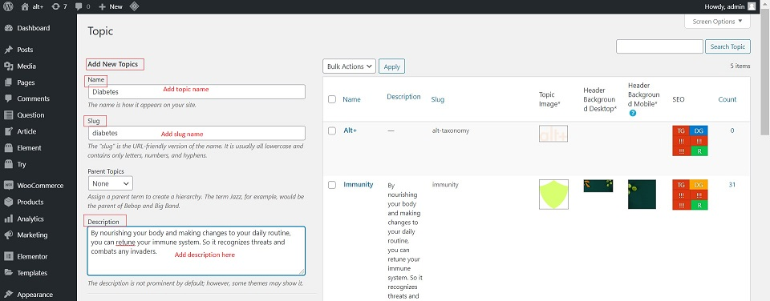
-
Name - It should be the name which should be visible on the website.
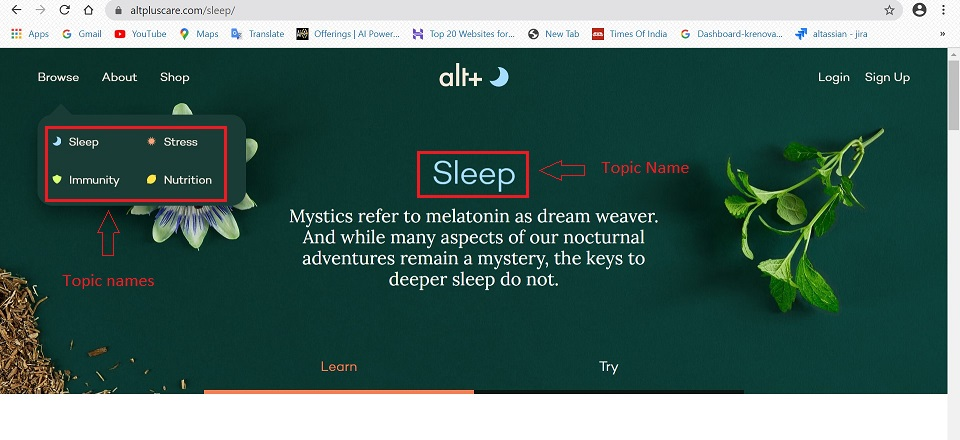
-
Slug - This is the URL friendly name. Keep it same as Name.
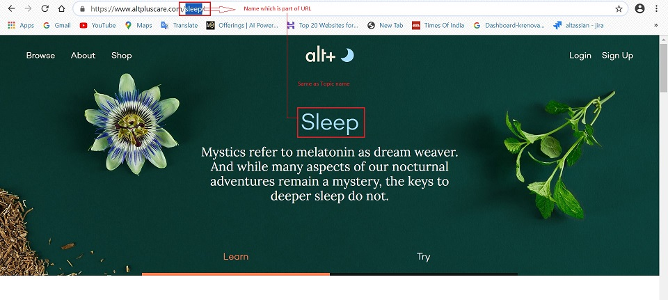
-
Description - This is the topic description which shows under the topic name on the website. It should be copied from the right side panel.
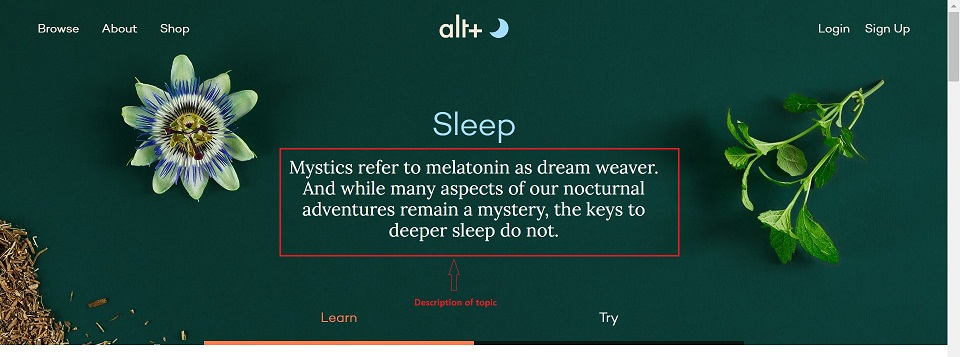
-
-
Topics:
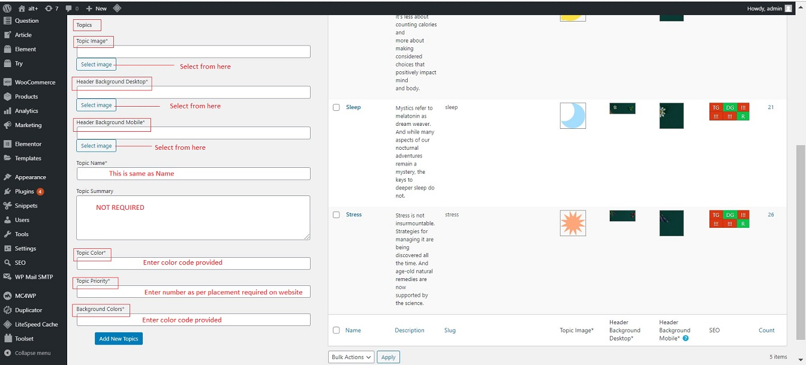
-
Topic image - This is a small icon which preceeds the topic name. Click on 'Select Image'.
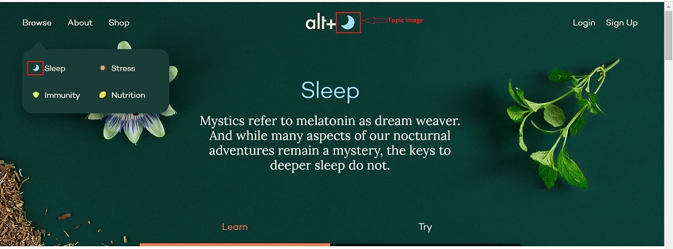
-
Header Background Desktop - This is the topic background image for desktop website. Click on 'Select Image'.
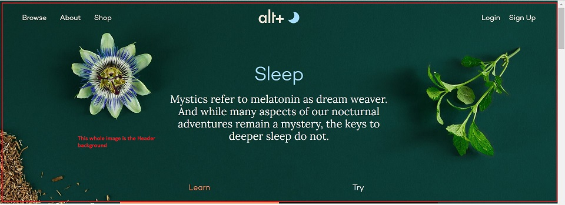
-
Header Background Mobile - This is the topic background image for mobile website. Click on 'Select Image'.
- Topic Name - This is same as Name
- Topic Summary - This field is not required.
-
Topic Color - This is the color assigned to the Topic as it will show on the website. The color is designated by "#' and a number (eg. #a5ddff). The color code to be entered will be provided to you.
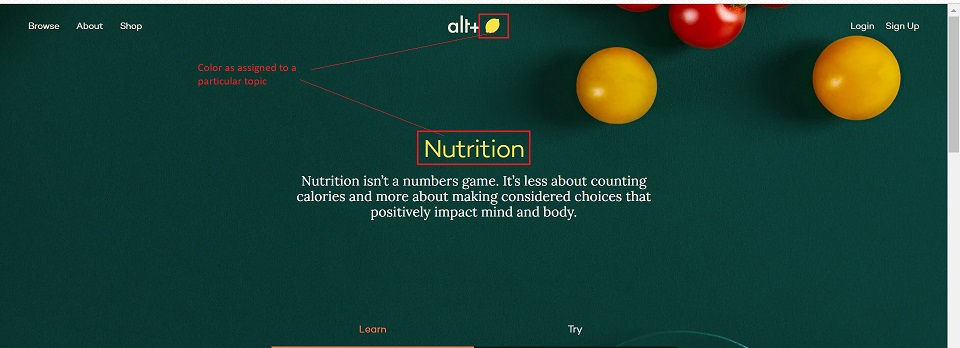
-
Topic Priority - This defines the placement of the topic. Only numbers need to be entered. When a new topic is added and given a priority, the priority needs to be adjusted for other topics as well.
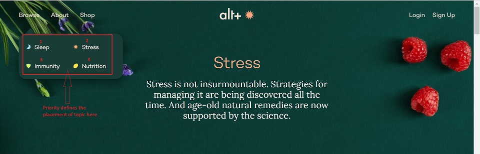
-
Background Colors - This is the backgound color assigned to the topic Question/Answer placards. The color is designated by "#' and a number (eg. #ebf9ff). The color code to be entered will be provided to you.
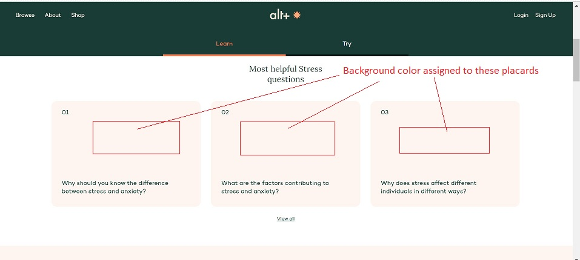
-
-
Click on Add New Topics at the bottom of page to save the changes.
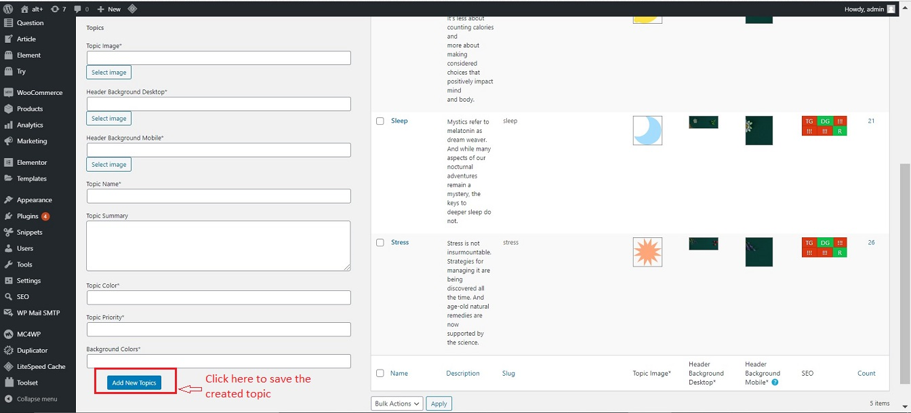
Note : The topic page created here is by default the Learn Page for the topic.